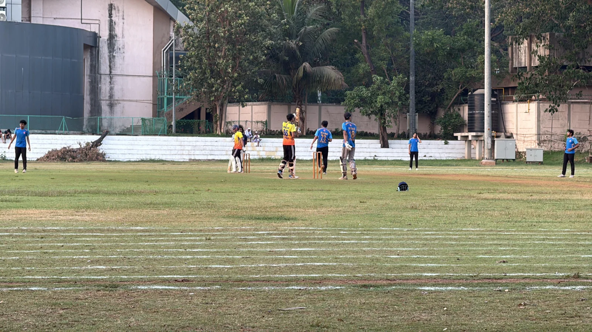
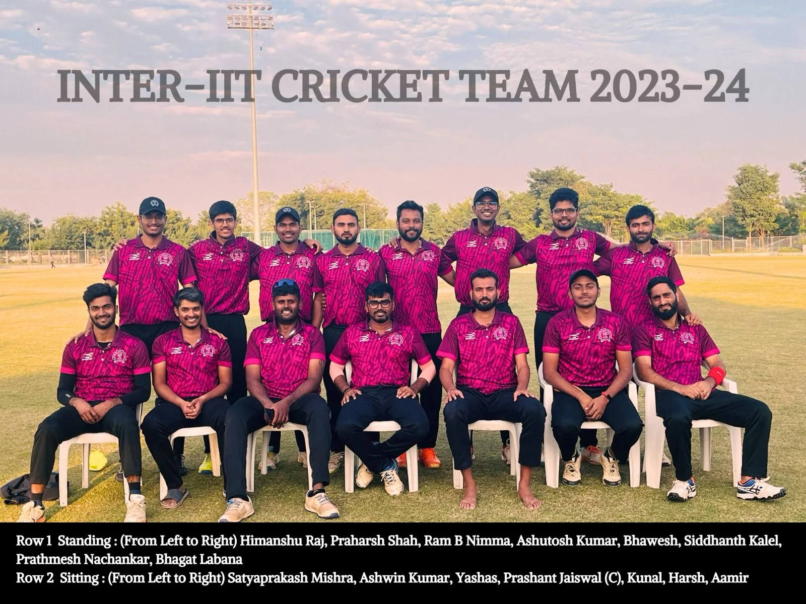
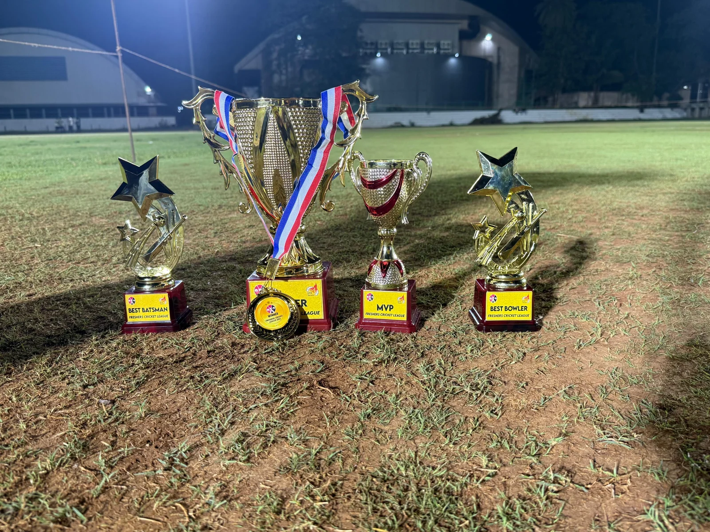

Main Cricket Ground
- Situated in the heart of the Gymkhana, bordered by the athletic tracks.
- New floodlights installed to facilitate Day & Night matches on the main field.
A first net session, a hostel match, a team to train with. Explore the main ground, indoor practice and campus activities, then contact the team about your next step.
Find your starting pointSpaces, equipment and practice.
Get to know what the sport offers.
Facility descriptions are from the institute’s October 2026 archive. Confirm current access, hours, equipment and coaching arrangements with the sports office.
Camps, institute competitions and ways to take part. Explore the activities described by the sports community.
These are archived activity descriptions, not upcoming fixtures. Ask the team about current dates, entry and eligibility.
Part of the academic curriculum for undergraduate students. Through selections, 30–40 students who opted for cricket are trained throughout the academic year, two days a week (Monday and Tuesday). NSO is the structured entry point for serious cricket development at IITB.
The flagship open tournament for Cricket at IIT Bombay. Open to all students, alumni, professors, and staff, it is held in the Spring Semester. Highly competitive, it is a must-play for all cricket enthusiasts — an especially valuable platform for intermediates to go up against experienced Inter-IIT team members.
The inter-hostel cricket tournament held annually on the main ground. Hostels bring their best players to compete for valuable General Championship points. Comprises 15-over matches played with white balls, taking place in January.
A fun event held at the Open Air Theatre (OAT) where 32 teams — each of 5 guys and 2 girls — play against each other with rules similar to street cricket. Usually takes place in October, it's one of the most inclusive and high-energy events on the cricket calendar.
A league initiated to give freshmen an opportunity to showcase talent developed through NSO, GC, Cricmania, and camps. Four teams formed through bidding compete in March. It has been a consistent source of raw talent and an encouragement for cricket enthusiasts to pursue the game throughout their time at the institute.
Historical results from the institute’s published source, preserved with their original years.
GOLD
BRONZE
BRONZE
The main cricket ground sits inside the athletics oval. Indoor nets are described separately in the archive.
Explore the sporting campus Cricket ground
Cricket groundAsk about getting started, current training, access or the right route into a team.
Contacts below are from the institutional snapshot of 18 October 2026. Confirm the current office-holder before reaching out.
Contact the sports office
Cricket, on campus.
Photographs from the archive.


Another way to play
Football ↗